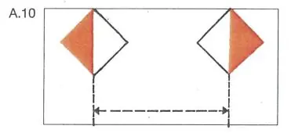
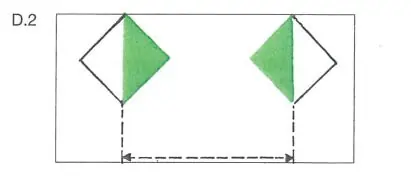

§ 6.24 Durchfahren von Brücken und Wehren Allgemeines
Rheinschiffahrtspolizeiverordnung
1. | In einer Brücken- oder Wehröffnung gilt § 6.07, es sei denn, das Fahrwasser gewährt hinreichenden Raum für die gleichzeitige Durchfahrt. | ||
2. | Ist eine Brücken- oder Wehröffnung gekennzeichnet | ||
a) | durch das Tafelzeichen A.10 (Anlage 7), ist die Schiffahrt in dieser Öffnung außerhalb des durch die beiden Tafeln dieses Zeichens begrenzten Raumes verboten; |  | |
b) | durch das Tafelzeichen D.2 (Anlage 7), wird der Schiffahrt empfohlen, sich in dieser Öffnung in dem durch die beiden Tafeln dieses Zeichens begrenzten Raum zu halten. |  |